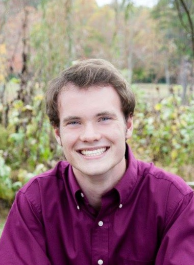

Stephen Cure - 100 Twinbrook Dr. Greenville SC
Hi, my name is Stephen Cure. I am an Exercise Science Major at Bob Jones University and I am planning to graduate December 2017. I want to be a youth gymnastics coach and help kids overcome the obstacles of life by teaching them life principles through gymnastics. I have been invovled in gymnastics and Parkour for 6 years and I love teaching and practicing both of these sports.
I am currently a coach at Acrosmith Gymnastics located in Greenville South Carolina just off of Woodruff Road.
Click Here to visit Acrosmith Gymnastics OnlineMy responsibilities at Acrosmith Gymnastics consist of teaching the Ninja Class for the 6-13 year olds and assisting in coaching a junior tunbling class. The Ninja Class focuses on fundemental movement skills such as climbing, swinging, and crawling, and also gives an introduction to begginer parkour and gymnastics skills. The tumbling class ranges from 6 to 15 year olds and focuses on imporving tumbling skills and helping kids get started in tumbling.
I have had the opurtunity to perform tumbling and parkour skills on stage at my school three times during my college carrer. One of the most memorable times was a tumbling line I performed alongside the famous Bob Reese during my school's production of the opera "Aida". Click Here to see a clip from Aida. My scene starts at 2:45
I have enjoyed prticing these fun sports and can't wait to make teaching them my career!